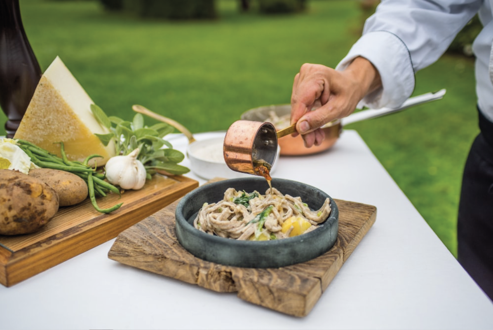
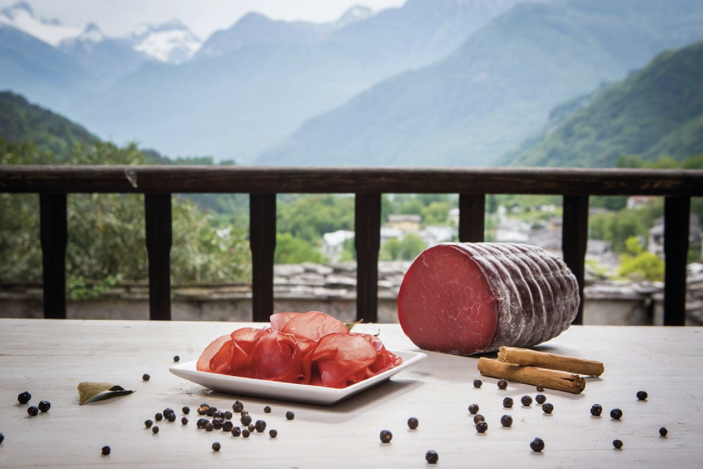

Mangiare & Bere
Tra vini e sapori
La Valtellina è terra di sapori antichi; la sua cucina, genuina e paesana come l’ambiente da cui trae origine, presenta cibi molto apprezzati dai palati più esigenti. La fraina o, farina di grano saraceno, con il burro e i formaggi d’alpe e la bresaola danno alla cucina valtellinese una forte tipicità, unica in tutto l’arco alpino. Questi i piatti tipici: Pizzoccheri, rustiche tagliatelle di farina nera con verdure, condite con burro e formaggio d’alpe. Sciatt, informi frittelle di farina nera ripiene di formaggio. Polenta taragna, con farina nera, burro e formaggio. Pane di segale.
Bresaola, salume tipico, si tratta di carne di manzo salata con metodo a secco, cioè unendo alla carne il sale e lasciando che la soluzione salina si formi con il succo della carne stessa, ed essicata all’aria. Di sapore dolce e morbido, delicata nel gusto, va consumata preferibilmente al naturale, anche in carpaccio. Salami e prosciutti.
Formaggi, Casera, Scimudin, Bitto riconosciuto come il re tra le produzioni casearie valtellinesi, si fregia della DOP. È un formaggio d’alpe grasso a pasta semicotta, di media durezza e media stagionatura, di sapore dolce e delicato che tende a divenire vivace con l’invecchiamento, negli stadi giovanili è un classico formaggio da taglio, mentre dopo l’anno di stagionatura diventa un eccellente prodotto da condimento e da grattuggia. Cacciagione. Funghi porcini. Bisciöla, rustico panettone valtellinese con noci, fichi e uvette, viene servito al naturale accompagnato da salsa alla vaniglia o salsa al Braulio, il rinomato amaro di Bormio. Vini di Valtellina: Sassella, Grumello, Inferno, Valgella, Valtellina e Sforzato. Grappe e amari di erbe alpine: Braulio e Taneda tra i più famosi.